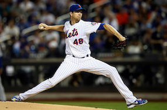
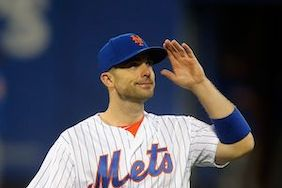
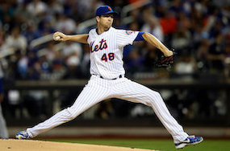
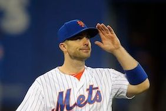

The New York Mets
This page is designed to provide a general overview on the greatest
baseball team in the world. Please click on each tab to learn more about
the history, present day, controversies and the most famous players in New York Mets History.
Brief Overview
The New York Mets are one of the most well known baseball teams in the world. They frequently have
superstar players on the roster and the potential to be one of the best teams in the MLB. However, poor management and a terrible front office
plagues the organization, which is stuck in a continous cycle of "what could have been". For a large portion of their history,
the "Amazin's" have been one of the most dissapointing teams in Major League Baseball. Nevertheless, the Mets recently
hired a new General Manager and Manager and the future looks very promising.
 


